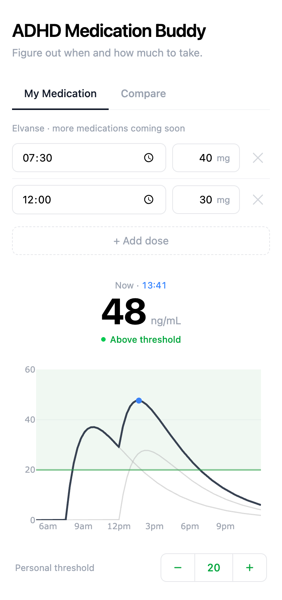
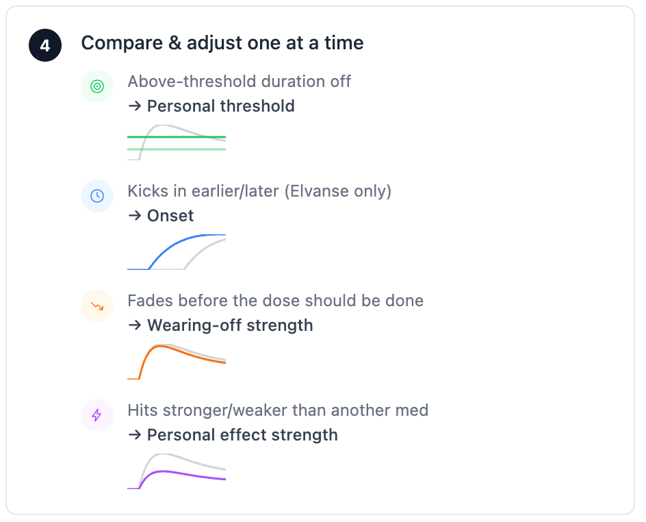
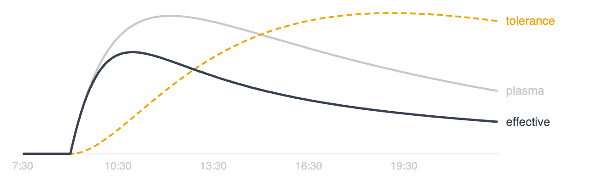
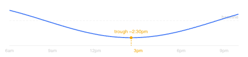
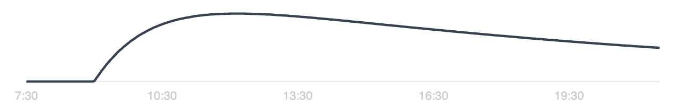
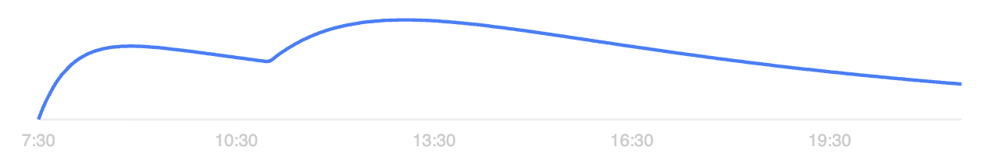
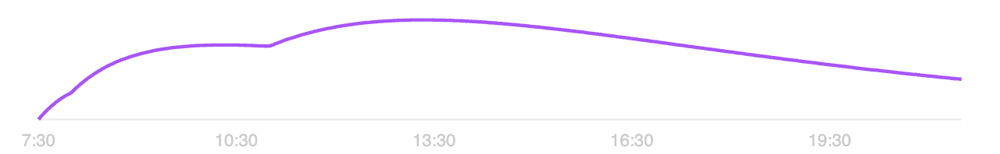
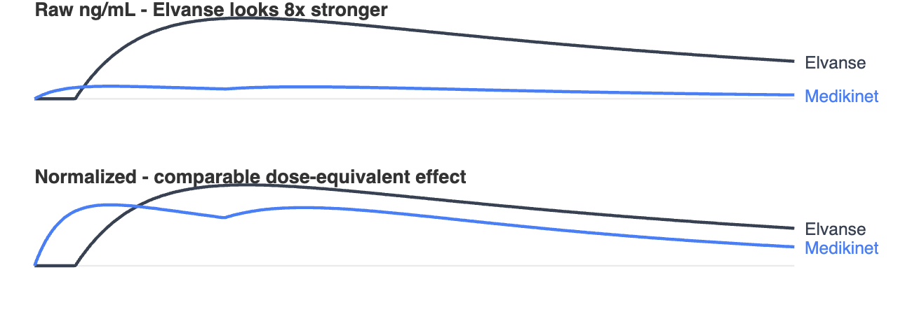

I built an app for that.


In the first post, I modelled Elvanse concentration in the bloodstream over the course of a day. You could plug in your dose and timing and see what your blood levels might look like. Useful - but it had one obvious problem. The curve said your medication was still active. Your brain said otherwise.
Plasma != Effect
Plasma concentration and therapeutic effect are not the same thing. If you plot effect against concentration over time, you get a clockwise loop: on the way up, rising plasma produces rising effect. On the way down, the same concentration that felt sharp at 10am does nothing at 3pm. This is acute tolerance. The system adapts to sustained stimulation and reduces its response over the day. It resets overnight - not cumulative.
The Tolerance Compartment
To model this, I add a tolerance compartment - a hidden state variable T that grows with drug exposure and decays when the drug clears:
effective(t) = C(t) / (1 + T(t)) dT/dt = k_tol * C(t) - k_deg * T(t)

The tricky part is calibrating k_tol. Published values come from euphoria studies in healthy volunteers at recreational doses. Those values predict 67% suppression at peak - accurate for the subjective high, completely wrong for cognitive ADHD effects. Using them makes the model predict wearing-off two to three hours too early. Much tolerance. Very wrong. The right value is about a third of that, calibrated to where people actually report wearing off.
The Circadian Dip
Time of day matters too, independent of drug levels. The mid-afternoon dip is real - roughly 15% reduction in dopaminergic availability, bottoming out around 2:30pm. Small on its own. Landing right when the drug is already descending, it's enough to explain the days where everything falls apart under otherwise identical conditions. A simple cosine term handles this.

Elvanse, Medikinet, and Concerta
Each medication produces a different plasma profile - not just in duration, but in shape. That shape matters because it determines how fast concentration rises, whether there's a second peak, and whether the drug can stay ahead of tolerance.

Why it rises and falls smoothly
The capsule itself is inactive - it's a prodrug. Your body has to slowly convert it (in the red blood cells) before it becomes real medication. That slow conversion is the rate-limiting step, which is why the curve is one smooth hump.

Why it has two bumps
The capsule contains two kinds of pellets: white ones that dissolve right away, and blue ones with a special coating that only dissolves once it hits your gut later on. Each kind makes its own peak.

Why it climbs steadily instead of peaking
The outer coating (about 22% of the dose) dissolves immediately, giving a small early bump. Underneath is an osmotic pump: water seeps in through the shell and pushes medication out through a laser-drilled hole at a rate engineered to speed up over the day. After the early bump it just climbs steadily for hours, then tapers off once the pump runs dry.
Why does Concerta's ascending profile matter? Swanson's group tested it directly: flat plasma delivery vs. ascending delivery in children with ADHD, same drug. Flat: afternoon efficacy collapsed. Ascending: full efficacy held. The system adapts to a constant signal. A moving target, it can't keep up with.
Three Bateman components model this - but not three physical mechanisms. The tablet has two: the IR coat (22%) and the osmotic pump (78%). The pump produces a rising delivery rate, and a single Bateman function can't capture that (it always peaks then falls). Two overlapping OROS components, offset in time, approximate the ascending shape.
The Units Problem
Adding multiple drug classes created a units problem. Elvanse peaks around 100 ng/mL at 70mg. Medikinet peaks around 13 ng/mL at 40mg. Both are full therapeutic doses - both hit the same target receptor occupancy. But summing raw ng/mL makes Elvanse look eight times stronger. I normalize each drug by its dose-to-peak ratio before the pharmacodynamic layer, so a standard dose of any medication contributes a comparable baseline. What's left - how strongly you personally respond to each drug - you tune yourself.

Putting It All Together
Every piece above folds into one equation. Raw concentration gets normalized, run through the tolerance compartment, modulated by the circadian dip, then scaled by how strongly you personally respond:
effective(t) = [C(t) / CMAX_PER_MG] / (1 + T(t)) × circadian(t) × personal_effect_strength
How to Use It
The model is still a planning tool, not a predictor. Your personal threshold is the main thing to set - the level below which you feel worn off. If you only ever take one medication, that's honestly close to enough: set it once to match your actual wearing-off time, then use the app to plan timing and dosing changes before trying them.
Three more sliders exist for everyone else. The moment you're comparing two different drug classes - not just two doses of the same one - a single threshold stops being sufficient. Normalization equalizes the dose-equivalent scale, but it can't know that Concerta hits you harder than Elvanse does, or that your own tolerance builds faster on one than the other. That residual, personal difference is exactly what these sliders are for:
- Onset - how long the prodrug conversion actually takes for you, if not the modelled default.
- Wearing-off strength - how aggressively your tolerance compartment builds up through the day.
- Personal effect strength - your own correction on top of the dose-normalization, per medication.
References
Brauer LH, Ambre J, de Wit H (1996). Acute tolerance to subjective but not cardiovascular effects of d-amphetamine in normal, healthy men. J Clin Psychopharmacol, 16(1):72-76.
Swanson JM et al. (1999). Acute tolerance to methylphenidate in the treatment of attention deficit hyperactivity disorder in children. Clin Pharmacol Ther, 66(3):295-305.
Mager DE et al. (2014). Hysteresis in pharmacokinetic-pharmacodynamic modeling: model selection and diagnostics. J Pharm Pharm Sci.
Shappell SA et al. (1996). Chronopharmacodynamics of d-amphetamine: sex differences and menstrual cycle effects. J Clin Pharmacol, 36(4):351-357.
Cortese S et al. (2025). Tolerance and tachyphylaxis to stimulant medications in ADHD: a systematic review. Neurosci Biobehav Rev.